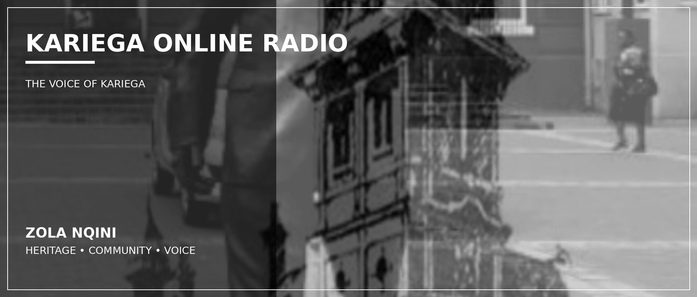

Community
People-focused, local and connected to the heartbeat of Kariega.

Live. Local. Connected. Great music, inspiring shows and real conversations — proudly Kariega.
Kariega Online Radio is an online community-focused station built around local voices, real stories, positive vibes, great music and meaningful conversations. Wherever you are, stay connected to Kariega.
People-focused, local and connected to the heartbeat of Kariega.
Great music, inspiring shows and real conversations across the week.
Giving youth and community voices a platform to be heard.
Tune in from your phone, tablet or desktop wherever you are.


Contact the station, submit music, or join the Kariega Online Radio team.